The heat ring
The window it covers, the shape it takes, how it is scaled, and what sits in the middle.
Heat Ring#
The dashboard and streak cards draw the current streak as a ring, where each node is one day and its depth is that day's contribution count. The ring covers exactly the days the number in its centre reports, so the two never disagree.
Everything below is optional. The defaults need no configuration.
Window#
The window decides how many days the ring covers. streak follows the current streak, so every node is an active day. A fixed window covers a set number of days ending on the latest one, including quiet days.
--heat-window streak (default)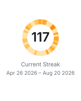
117 active days, one node each
--heat-window 30
30 days, quiet ones in grey
--heat-limit 30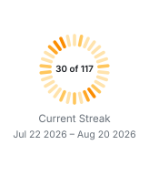
The last 30 days of a 117 day streak
A streak is uncapped by default. --heat-limit caps how many days the ring draws without changing the streak itself, which is useful once a streak grows past the point where the ring stays informative. The date line under the ring always describes what the ring covers, not the whole streak.
Centre label#
Three counts are available, and a template places them:
| Placeholder | Meaning |
|---|---|
{X} | Days inside the window with at least one contribution |
{Y} | Days the window covers, which is the number of nodes on the ring |
{Z} | The current streak in full, before any limit shortens the ring |
The default template depends on the window: {Y} for a streak, where all three counts are the same number, and {X}/last {Y} for a fixed window.

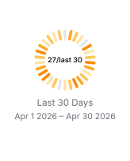
--heat-label "{X}/{Y}/{Z}"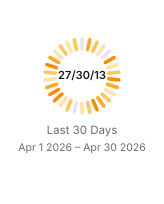
--heat-label "{X} of {Y} → {Z}"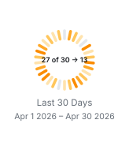
A template is free text, so any separator works. Longer text is set at a smaller size to stay inside the ring; keep templates short if you want the count to stay prominent.
Shape#
Radial ticks read well while they stay separable. Past roughly a hundred days they overlap into a furred edge, so the ring switches to arcs and averages neighbouring days into bands wide enough to see. segmented does this automatically and is the default.
--heat-shape ticks, 30 days
Clean and countable
ticks, 117 days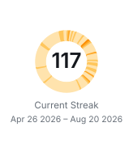
Crowded
arcs, 117 days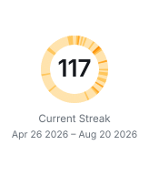
One arc per day, under two pixels each
bands, 117 days
Days averaged into readable bands
| Value | Behaviour |
|---|---|
segmented | Ticks up to the threshold, averaged bands beyond it (default) |
ticks | Always one radial tick per day |
arcs | Always one arc per day, however thin |
bands | Always averaged arcs |
--heat-threshold moves where segmented switches over. It defaults to 100 days; --heat-threshold 87 switches at 87 instead.
Scale#
The scale maps a day's contribution count onto the four colour stops. Contribution counts are usually heavy-tailed — many ordinary days and a few large ones — and each scale handles that tail differently.
--heat-scale linear (default)
Faithful to the raw counts, so a few big days dominate and ordinary days stay pale
sqrt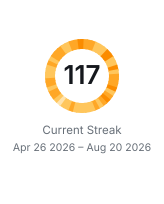
Keeps ordinary days visible while big days still stand out
log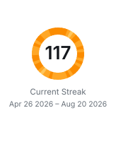
Compresses hard, so almost everything reads as busy
quantile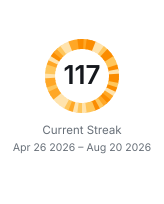
Splits the window into four equal shares, giving the most contrast and the least relation to raw counts
Pick linear when you want the ring to be literal about volume. Pick sqrt when your busiest days are many times larger than your typical ones and the ring looks washed out.
Colour#
heat-orange is the default. Six palettes are built in:
heat-orange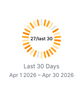
github-blue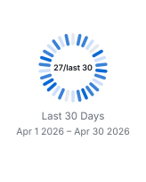
forest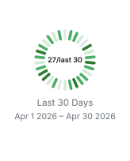
violet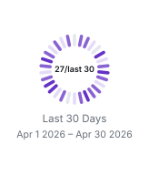
crimson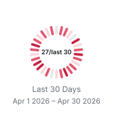
graphite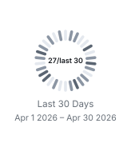
--heat-color also takes colours directly. One hex value becomes the busiest stop and the other three are derived from it in OkLab, which keeps the hue instead of fading towards grey; on a dark card the derivation runs the other way, as described under Themes. Four hex values, quietest first, are used exactly as given on every theme.
--heat-color "#8250df"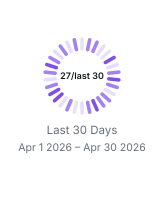
--heat-color "#dbe9d5,#a3cf9a,#5aa04f,#1f6f2f"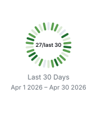
Option reference#
| Option | Default | Accepts |
|---|---|---|
--heat-window | streak | streak or a day count |
--heat-limit | none | a day count, or none |
--heat-shape | segmented | segmented, ticks, arcs, bands |
--heat-threshold | 100 | a day count |
--heat-scale | linear | linear, sqrt, log, quantile |
--heat-color | heat-orange | a palette name, one hex value, or four hex values |
--heat-label | per window | free text with {X}, {Y}, {Z} |
Pass them through the Action the same way as any other option:
options: --user your-github-login --heat-window 60 --heat-scale sqrt --heat-color github-blue --heat-label "{X}/last {Y}"Behaviour worth knowing#
- Above the threshold, neighbouring days are averaged so each band stays at least four pixels wide. The ring still spans exactly the days the centre reports, but the bands you can count are fewer than the days.
- A streak window has no quiet days by definition. Only a fixed window shows grey nodes.
- A window longer than the available history pads the missing days as quiet.
- When the streak is zero the ring falls back to a plain track and the centre reads
0. - Regenerate the images in this section with
python3 scripts/render-ring-samples.pyafter building the CLI.